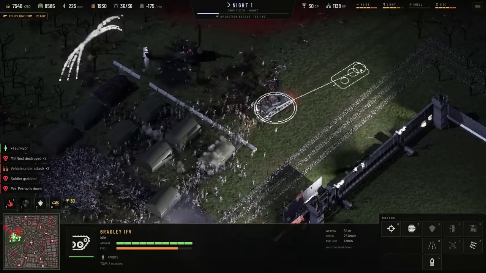
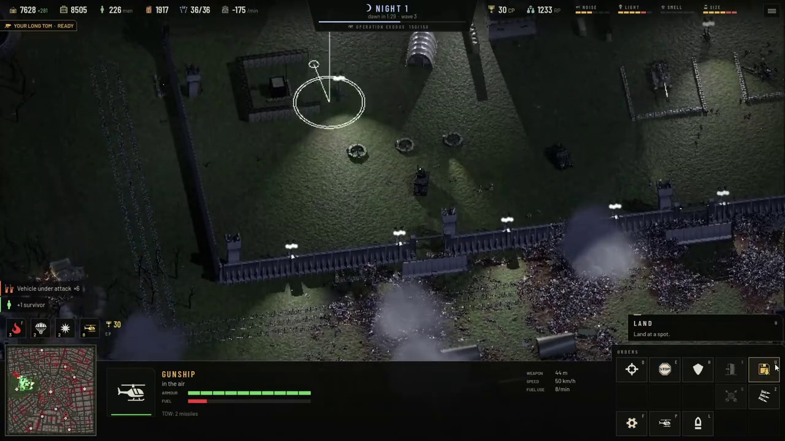
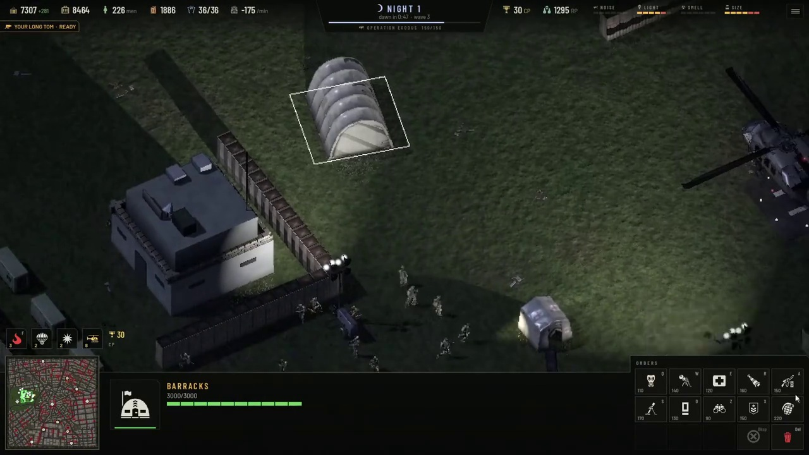
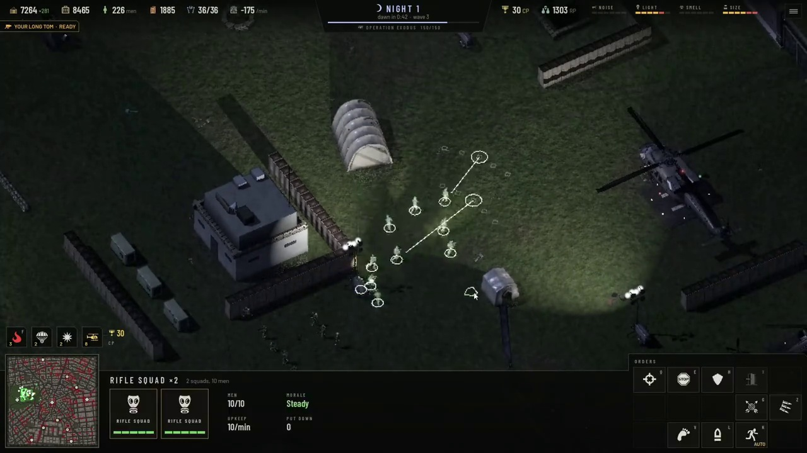
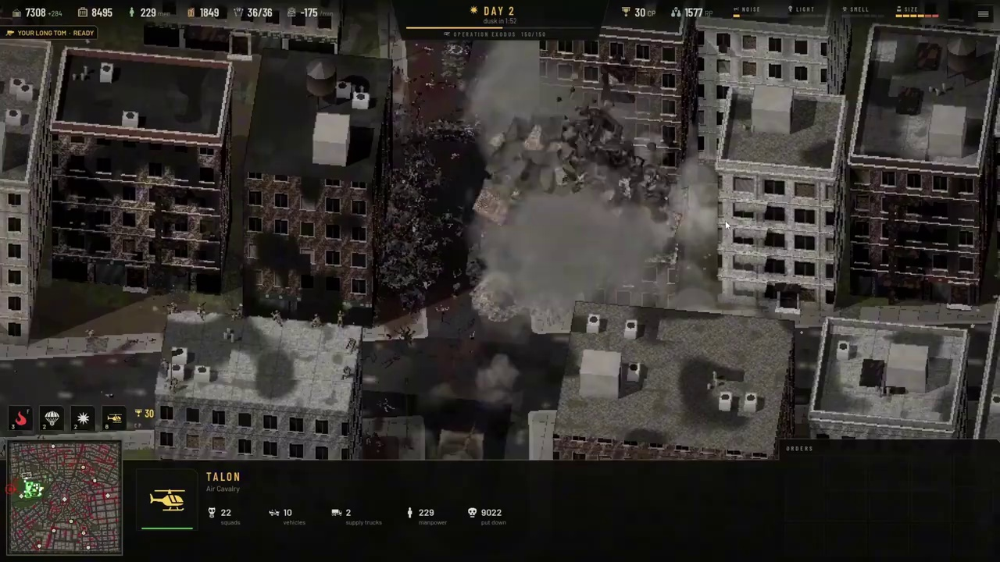
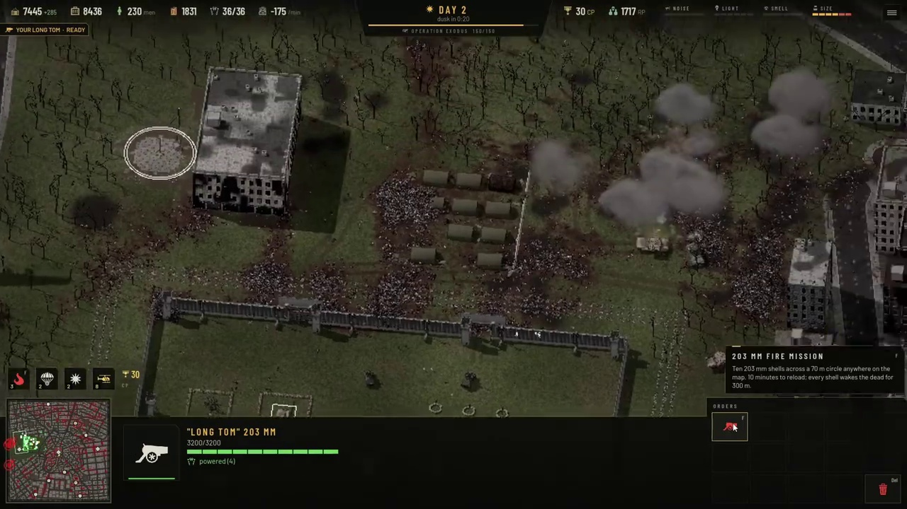
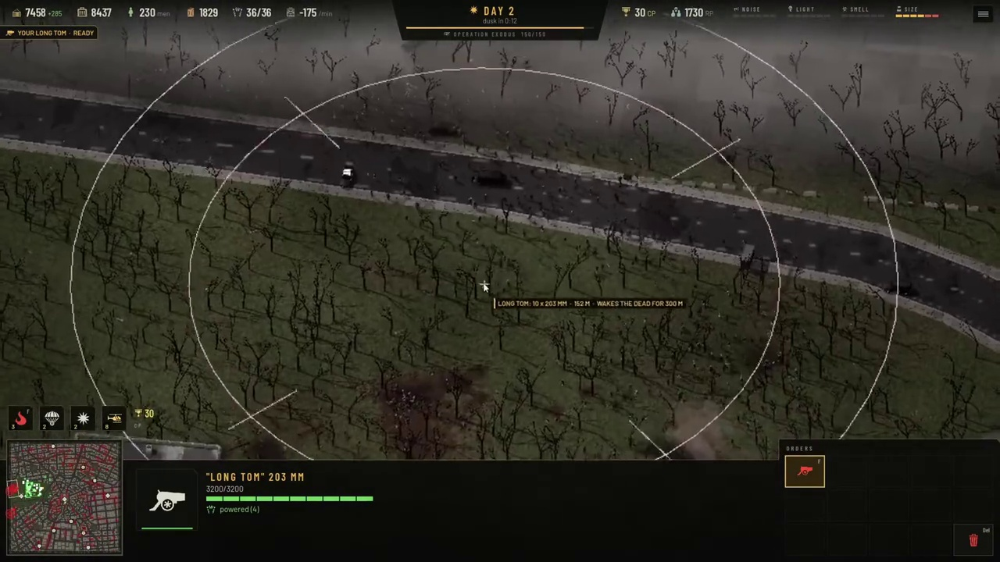

完整媒体已取得 · 分段审阅
僵尸末日即时战略！《RESTAND》原型战斗实机展示
Bili-异域旅行者 / 2026-11-01 01:50:21
页面发布时间未注明时区。转载作者不自动等同开发者，简介 jgdcnl 与 MANTAKU 的关联未证。
打开用户指定视频 ↗一份面向 Three.js 网页三维游戏的研究笔记。关注玩家如何看清局势、理解对象、获得反馈，以及这些经验如何进入可验证的原型。
已取得4:41全长媒体，逐段覆盖首尾时间线，关键交互以3–10帧/秒复查。未实时连续播放、未审听音频、未试玩；具体键位与完整后勤循环仍待核实。
全片支持的局部循环是：巡视战线 → 选择对象 → 检查动作 → 指定位置、朝向或范围 → 观察结果 → 再部署。后勤、训练与胜负循环仍未补齐；本项目先验证命令是否清楚。
Bili-异域旅行者 / 2026-11-01 01:50:21
页面发布时间未注明时区。转载作者不自动等同开发者，简介 jgdcnl 与 MANTAKU 的关联未证。
打开用户指定视频 ↗公开720P媒体280.732秒，8421帧全部顺序解码。实际视觉研究是19张联系表、每0.5秒选帧覆盖首尾，关键交互按3–10帧/秒复查。未实时连续播放观摩、未逐帧看完8421帧，未审听音频或试玩。报告保留可追踪的操作链与7张实机图，完整媒体留在本机临时目录。
解码与审阅区间记录 ↗黑底说明当前为早期原型，功能可能调整，计划内容并未全部出现在片中。
原型展示不能作为完整功能验收。选择载具后出现选中环、单位面板和指令栏；地面出现载具目标轮廓与连接线，预览朝向变化，随后载具机动。
看不到输入设备记录，不能断言右键、拖动定向或修饰键。镜头在围墙、车辆、直升机和内部设施之间移动；底部随对象切换，未选具体对象时出现 TALON 总览。
不以 TALON 文案推定玩家阵营、城镇或编队规则。拉远观察据点多侧压力，再拉近直升机；约40至41秒画面转为夜景。
可能存在展示剪辑；不据此计算昼夜周期。载具在围墙外敌群附近作战；多次出现位置与朝向轮廓，载具随部署调整。
不能从枪口火光判定每次开火均由玩家点击触发。白色矩形边界与 REINFORCED WALL、MG NEST 面板切换相伴；之后镜头观察缺口、烟尘与敌群。
此处白框是建筑选中边界证据，不能作为拖拽多选证据。选中载具后显示指向道路的目标轮廓和连线；约76.8秒面板可读 BRADLEY IFV、ARMOUR 和 FUEL；随后车辆沿道路移动，周围战斗持续。
护甲与燃料是不同状态；不能把橙条当生命值，也未核对补给过程。约90秒步兵出现成员选中环、队伍面板及地面目标；步兵位置随后改变，再切换载具对象。
未看到命令队列、编队编号或混合编队保持规则。镜头沿围墙与密集敌群巡视，直升机和地面火力同时出现；火光、烟尘持续改变可见性。
未验证小地图点击定位、事件点击跳转或目标优先级算法。选中 GUNSHIP，面板显示 in the air、ARMOUR、FUEL；119.8秒悬停可见 LAND 提示，121.6秒可见 FIGHT HERE 提示；地面圆环、连线和目标位置持续更新，直升机移动。
提示证明可用动作被展示，未观察到完整落地、加油或弹药补充。134.2秒选中 BARRACKS，出现3000/3000和带数字的动作格；切到步兵后出现成员卡与地面目的地；139.2至139.6秒绿色选择矩形扩张，139.7秒出现 RIFLE SQUAD ×2、两张小队卡和10/10，随后出现两组目标连线。
建筑菜单不等于完成训练或建造；双队选择不证明永久编队快捷键。镜头拉远、转向城市街区，车辆被选择，地面目的地和朝向预览继续出现，车辆穿过敌群机动。
镜头跨区域变化不能单独确定小地图输入方式。约187.5秒 MAIN BATTLE TANK 面板可读；190.5秒 FIRE HERE 提示可向指定地点持续射击（界面标注Z）；街区反复出现射击和爆炸，约218至220秒建筑分块坠落并产生烟尘。
只确认该建筑倒塌表现，不能推出所有建筑可毁、破坏阈值或倒塌后寻路更新。镜头拉回街区边缘，装甲车辆在不同目标轮廓之间调整位置，战斗继续；顶部已出现 DAY 2。
阶段字样存在不等于已验证完整天数推进规则。选中“LONG TOM”203 MM；246秒提示为203 MM FIRE MISSION，标注F；约253.6秒指令格高亮，254.5秒地面出现双圆与方向刻线，约256秒预览消失，260.5秒可见任务通知、9:55冷却与炮位烟团。
F是界面标注的快捷键，不能证明本次实际按下F；双圆各自含义不能仅凭形状完全确定。约265秒起此前指向区域出现多次爆炸与尘柱，镜头继续观察战场，视频在战斗中结束。
未出现结算、胜利或失败界面；不能把片尾当作完成一局。高清可读状态 idle / moving，以及护甲 ARMOUR、燃料 FUEL。橙条不是生命值；连线不是已验证的寻路轨迹。早期切换两辆同型号车也不能误写为同车瞬移。
未知：鼠标键、拖动定向输入、路径阻挡、无效目标和命令队列。10帧/秒复查确认 RIFLE SQUAD ×2、10/10 与多名成员选中环；随后可见两组目标连线。约02:55还出现混合多选汇总（22 selected：17小队、5载具），但其选择输入未知。
纠正：00:57白框伴随墙体/机枪阵地面板，是建筑边界。多选已证，编组快捷键、修饰键和取消方式未证。01:59.8有 LAND 提示，02:01.6有 FIGHT HERE 提示；02:14.2兵营显示3000/3000和带数字的动作格。选择切换会改变当前可用动作，场景轮廓与面板同步。
可见动作入口不等于流程完成：未看到完整落地、加油、支付、排队、训练完成或新建建筑落地。03:10.5提示将该动作描述为向地面、墙体或窗户位置持续射击，标注Z。03:38后楼体倾斜分离，03:40可见碎片下落。建筑遮挡时还可见白色车辆轮廓，帮助保持对象位置可读。
Z为界面标注，实际是否按下未知；不能将所有损伤都归因于所选坦克，也不能确认所有建筑可毁或倒塌会更新道路碰撞。对象明确为“LONG TOM”203毫米火炮。04:06提示 203 MM FIRE MISSION（标注F）；约04:13.6命令高亮，04:14.5双圆和方向刻线出现，约04:16预览消失；04:20.5可见任务通知与9:55冷却，约04:25起目标区密集爆炸。
提示声称10发、覆盖70米圆、地图任意位置、重装填10分钟、每发惊动300米内敌人。未逐发计数、未验证米制尺度或惊动AI；“70米圆”未明确半径/直径，双圆含义也不直接指定。片长不足以验证10分钟冷却。







游戏画面权利归原作者。仅保留用于玩法研究评论的关键帧；来源为用户指定B站展示，对照原频道 MANTAKU。完整视频未作为报告资源分发。
近景/远景和街区视角改变，让据点与火线反复进入视野。
未核实移动/缩放/旋转按键、投影方式及小地图输入。车辆、小队与兵营拥有不同信息栏与命令格，多选改为卡片与汇总。
矩形双队选择已确认；编队快捷键尚未知。车形轮廓表达到达姿态；火炮范围预览表达作用区域。
连线不能作为真实路径、范围不能当作已测量伤害半径。城市楼体受击后分块下落并产生烟尘，改变可见场景。
未确认底层物理、碰撞重建、碎片回收或全图可破坏。火炮任务从预览进入炮位烟团、通知和冷却，随后落区出现爆炸。
未验证完整重装填与噪声引敌；不是只看爆炸推测能力。MANTAKU自述开发僵尸RTS；战斗片未充分展示弹药与补给。
作者承认仍在开发，不能当作完整玩法教程。另有后勤建造视频和合作战役计划，均有开发中限制。
尚未实际观看这两条媒体，计划不等于可玩功能已确认。建造、训练、运输补给、维修、上下车和结算需要完整流程证据。
已完成全片局部交互研究，不用同类RTS惯例补写规则。MANTAKU频道自述为开发者。战斗原片与V01题材、4:41时长相符；未对两份媒体做逐帧同一性校验。
MANTAKU / 2026-10-26 / 4:41
频道作者自述正在开发僵尸末日RTS。 视频展示开发当前状态和战斗大致效果。 作者明确说弹药与补给等核心玩法未充分展示，因开发仍不成熟。
YouTube要求登录确认；本轮未观看该链接媒体。MANTAKU / 2026-10-30 / 4:56
展示城市内后勤主要运作方式。 作者说补给、燃料、弹药是重要玩法。 作者明确称当前并不完整，存在半成品内容且尚未平衡。
YouTube要求登录确认；本轮未观看该链接媒体。MANTAKU / 2026-10-11 / 0:36
宣布僵尸末日合作RTS。 计划单人或最多4人合作战役；更多人数仅是有条件的设想。 截至该视频发布日期，作者说尚无可加入愿望单的平台页面，正在等待正式Steam页。
YouTube要求登录确认；本轮未观看该链接媒体。观察：顶部存在多个数值和阶段字样。
本项目建议将全局状态固定在稳定区域，只展示会影响当前决策的指标；不要让普通数值和紧急告警争夺同一层级。
验证：玩家能否迅速指出当前阶段和最紧迫问题？上节记录RESTAND实际可见的操作链。下面将其转成适用于本项目的设计建议：选择一致、目标可见、执行可追踪。步骤按钮与二维演示是报告设计；其按键和取消规则不代表原作。
先发现战线与局部异常。用轮廓、留白和提示优先级区分可控制对象、敌群与环境，避免把判断负担交给特效。
典型风险：烟尘遮住对象，玩家失去判断依据。先选小队，再下达目标。观察选中轮廓、目标标记和状态文字是否同步变化。
二维示意模型，不含战斗、寻路或碰撞。不是 Three.js 游戏原型，也不是原作操作复刻。
单选显示属性，多选显示卡片、数量与共有动作；场景轮廓、信息栏和指令接收者来自同一选择集合。
区分命令已接收、正在执行、已完成与无效目标。无效时说明原因，保留再次操作入口。
取消选择要清理目标预览；切出页面要处理持续输入，恢复时不能突然执行旧命令。
| 研究启发 | 可尝试的实现 | 先验证什么 | 依据 |
|---|---|---|---|
| 对象与地面可区分明确操作对象 | Raycaster 分别检测候选单位与地面；界面点击不穿透到场景。 | 遮挡、空白点击、无效目标、重复命令。 | T02 ↗ |
| 大量相似角色画面不等于模拟成本 | 评估 InstancedMesh 减少相同几何体与材质的绘制调用；单位逻辑另测。 | 逐步增加活动对象，分别记录逻辑耗时与渲染帧时间。 | T03 ↗ |
| 输入动作统一按键尚未定稿 | 用 Pointer Events 接入设备事件，转为选择、下令、取消等动作。 | 鼠标与触控分别测试；拖动与点击需可区分。 | T07 ↗ |
| 浏览器能切出暂停需要规则 | 监听页面可见性；按时间戳计算动画差值，Timer 可用于避免后台大时间差。 | 切出、返回、暂停和继续时，无跳跃、卡键与旧命令误触。 | T06 ↗ |
| 性能结论可复现预算等待设备范围 | 记录设备、分辨率、帧时间、绘制调用与资源计数；renderer.info 不等于显存字节数。 | 在目标浏览器与实际设备上测量，明确降级策略。 | T04 ↗ |
| 场景可以反复进入生命周期可检查 | 退出时解绑事件、停止循环，释放独占几何体、材质与纹理；共享资源由拥有者管理。 | 多次进入、退出后，资源数量不持续增长。 | T05 ↗ |
若选择俯视战术方向，首个原型仅包含：一块地面、两个可选对象、位置与朝向预览、提交/取消反馈和暂停入口。先核对对象与目标一致，再加入矩形多选和共有命令；编队与敌群另行验证。资源经济、建造、联网与物理方案分别评估。
以下是帮助讨论的候选方向，均非已确认需求。切换方向查看可沿用的机制和新增验证成本，不以虚构评分替代决策。
俯视观察、单位选择、位置命令、战线告警与局部反馈。
敌群压力曲线、通路拥堵、目标优先级与失败后的恢复体验。
用占位对象调动两支队伍，检查玩家能否识别压力点并及时调整位置。
这些勾选仅代表工程师本机的阅读标记，不代表已经核验通过。
标记保存在当前浏览器，可随时清除。Scavenger/ ├─ README.md 项目入口 ├─ reports/ 报告与页面资源 ├─ research/RESTAND/ 来源、观察与证据 ├─ docs/ 约定、导航与经验 └─ scripts/ 预览、检查与公开媒体审阅
游戏源码目录在职责明确且开始实现后建立。报告资源与未来游戏资产分开管理。
项目结构与开发约定 ↗V01RESTAND 原型战斗实机展示完整媒体分段研究与关键操作复查；转载作者不等同开发者↗V02RESTAND Prototype Combat Showcase | A Zombie RTS GameMANTAKU · 仅公开元数据与作者声明，未观看该媒体↗V03RESTAND Prototype Logistics and Building ShowcaseMANTAKU · 仅公开元数据与作者声明，未观看该媒体↗V04RESTAND Official Game Sneakpeek - Zombie RTS Coming!MANTAKU · 仅公开元数据与作者声明，未观看该媒体↗T01Three.js 安装与项目组织↗T02Three.js Raycaster↗T03Three.js InstancedMesh↗T04Three.js WebGLRenderer↗T05Three.js 资源清理↗T06Three.js Timer↗T07MDN Pointer Events↗T08MDN 页面可见性↗T09MDN requestAnimationFrame↗公开搜索覆盖 RESTAND、Re:Stand、僵尸 RTS、原型战斗、完整视频标题、BV 号与简介字符串。用户提供的链接完成作品消歧；同名私服、格斗术语和其他作品已排除。
后续检索找到MANTAKU频道三条公开视频元数据和另一条B站战斗转载；后者未作为独立新玩法证据。B站站内搜索接口部分返回访问限制，原频道媒体要求登录，未绕过。
已取得V01全长并覆盖首尾时间线，关键链加密复查；仍未实时连续播放、审听音频或试玩，完整后勤与胜负循环未核实。计算机/Node工具初始化出现kernel assets路径故障，本轮增量页面未浏览器复测；静态检查与旧版浏览器结果分别记录。未开展游戏实现或设备性能验收。
把画面转成问题，把问题转成实验。
回到顶部 ↑